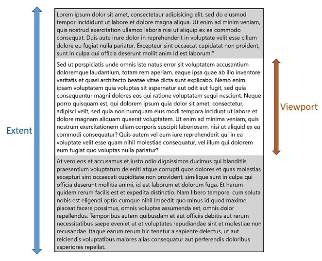
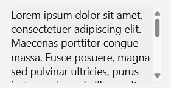
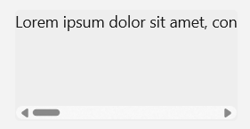

Scroll viewer controls
When there is more UI content to show than you can fit in an area, use a scroll viewer control.
Scroll viewers enable content to extend beyond the bounds of the viewport (visible area). Users reach this content by manipulating the scroll viewer surface through touch, mousewheel, keyboard, or a gamepad, or by using the mouse or pen cursor to interact with the scroll viewer's scrollbar.
Depending on the situation, the scroll viewer's scrollbar uses two different visualizations, shown in the following illustration: the panning indicator (left) and the traditional scrollbar thumb (right).


Important
WinUI 3 has two different scroll viewer controls available: ScrollViewer and ScrollView. Whenever we speak generically about scroll viewer controls, the information applies to both controls.
Scrolling, panning, and zooming
Use a scroll viewer control to allow scrolling, panning, and zooming of your content.
- Scrolling: Moving the content vertically or horizontally by dragging the scrollbar thumb or using the scroll wheel on a mouse.
- Panning: Moving content vertically or horizontally using touch or pen input.
- For more info about scrolling and panning, see Guidelines for panning.
- Zooming: Optically increasing or decreasing the scale of the content.
- For more info about zooming, see Optical zoom and resizing.
The scrollbar is conscious of the user's input method and uses it to determine which visualization to display.
- When the region is scrolled without manipulating the scrollbar directly, for example, by touch, the panning indicator appears, displaying the current scroll position.
- When the mouse or pen cursor moves over the panning indicator, it morphs into the traditional scrollbar. Dragging the scrollbar thumb manipulates the scrolling region.
Note
When the scrollbar is visible it is overlaid as 16px on top of the content inside your ScrollViewer. In order to ensure good UX design you will want to ensure that no interactive content is obscured by this overlay. Additionally if you would prefer not to have UX overlap, leave 16px of padding on the edge of the viewport to allow for the scrollbar.
Viewport and extent
A scroll viewer is composed of two main regions that are important to understanding its functionality. The area that includes all of the scrollable content, both hidden and visible, is the extent. The visible area of the control where the content is shown is the viewport.

Various APIs are available that let you get the height and width of these regions, as well as the scrollable height and width, which is the difference between the extent size and the viewport size.
Recommendations
- Whenever possible, design for vertical scrolling rather than horizontal.
- Use one-axis panning for content regions that extend beyond one viewport boundary (vertical or horizontal). Use two-axis panning for content regions that extend beyond both viewport boundaries (vertical and horizontal).
- Use the built-in scroll functionality in the items view, list view, grid view, combo box, list box, text input box, and hub controls. With those controls, if there are too many items to show all at once, the user is able to scroll either horizontally or vertically over the list of items.
- If you want the user to pan in both directions around a larger area, and possibly to zoom, too, for example, if you want to allow the user to pan and zoom over a full-sized image (rather than an image sized to fit the screen) then place the image inside a scroll viewer.
- If the user will scroll through a long passage of text, configure the scroll viewer to scroll vertically only.
- Use a scroll viewer to contain one object only. Note that the one object can be a layout panel, in turn containing any number of objects of its own.
- If you need to handle pointer events for a UIElement in a scrollable view (such as a ScrollViewer or ListView), you must explicitly disable support for manipulation events on the element in the view by calling UIElement.CancelDirectManipulation. To re-enable manipulation events in the view, call UIElement.TryStartDirectManipulation.
Create a scroll viewer
- Important APIs: ScrollView class, ScrollViewer class, ScrollBar class
Open the WinUI 3 Gallery app and see the ScrollView in action
Open the WinUI 3 Gallery app and see the ScrollViewer in action
The WinUI 3 Gallery app includes interactive examples of most WinUI 3 controls, features, and functionality. Get the app from the Microsoft Store or get the source code on GitHub
A scroll viewer control can be used to make content scrollable by explicitly wrapping the content in the scroll viewer, or by placing a scroll viewer in the control template of a content control.
Scroll viewer in a control template
It's typical for a scroll viewer control to exist as a composite part of other controls. A scroll viewer part will display a viewport along with scrollbars only when the host control's layout space is being constrained smaller than the expanded content size.
ItemsView includes a ScrollView control in its template. You can access the ScrollView though the ItemsView.ScrollView property.
ListView and GridView templates always include a ScrollViewer. TextBox and RichEditBox also include a ScrollViewer in their templates. To influence some of the behavior and properties of the built in ScrollViewer part, ScrollViewer defines a number of XAML attached properties that can be set in styles and used in template bindings. For more info about attached properties, see Attached properties overview.
Set scrollable content
Content inside of a scroll viewer becomes scrollable when it's larger than the scroll viewer's viewport
This example sets a Rectangle as the content of the ScrollView control. The user only sees a 500x400 portion of that rectangle and can scroll to see the rest of it.
<ScrollView Width="500" Height="400">
<Rectangle Width="1000" Height="800">
<Rectangle.Fill>
<LinearGradientBrush StartPoint="0,0" EndPoint="1,1">
<GradientStop Color="Yellow" Offset="0.0" />
<GradientStop Color="Red" Offset="0.25" />
<GradientStop Color="Blue" Offset="0.75" />
<GradientStop Color="LimeGreen" Offset="1.0" />
</LinearGradientBrush>
</Rectangle.Fill>
</Rectangle>
</ScrollView>
Layout
In the previous example, the size of the rectangle is explicitly set to be larger than the scroll viewer. In cases were the scroll viewer content is allowed to grow naturally, like in a list or text block, you can configure the scroll viewer to let its content (the extent) expand vertically, horizontally, both, or neither.
For example, this text block will grow horizontally until its parent container constrains it, then wrap the text and grow vertically.
<TextBlock Text="{x:Bind someText}" TextWrapping="WrapWholeWords"/>
When the text block is wrapped in a scroll viewer, the scroll viewer constrains its horizontal and vertical growth.
Vertical means that the content is constrained horizontally, but can grow vertically beyond the viewport bounds, and the user can scroll the content up and down.

Horizontal means that the content is constrained vertically, but can grow horizontally beyond the viewport bounds, and the user can scroll the content left and right.

Scrollbar visibility
The ScrollViewer and ScrollView controls use slightly different means to configure the horizontal and vertical scrolling of content.
- In the ScrollViewer control, the VerticalScrollBarVisibility and HorizontalScrollBarVisibility properties control both the visibility of the scrollbars and whether scrolling in a particular direction is allowed. When a property is set to
Disabled, content can't be scrolled in that direction by user interaction.- The defaults are:
VerticalScrollBarVisibility="Auto",HorizontalScrollBarVisibility="Disabled"
- The defaults are:
- In the ScrollView control, the VerticalScrollBarVisibility and HorizontalScrollBarVisibility properties control only the visibility of the scrollbars.
- The defaults are:
VerticalScrollBarVisibility="Auto",HorizontalScrollBarVisibility="Auto"
- The defaults are:
This table describes the visibility options for these properties.
| Value | Description |
|---|---|
| Auto | A scrollbar appears only when the viewport cannot display all of the content. |
| Disabled (ScrollViewer only) | A scrollbar does not appear even when the viewport cannot display all of the content. Scrolling by user interaction is disabled. (Programmatic scrolling is still possible.) |
| Hidden | A scrollbar does not appear even when the viewport cannot display all of the content. Scrolling is still enabled, and can occur through touch, keyboard, or mouse wheel interaction. |
| Visible | A scrollbar always appears. (In current UX designs, the scrollbar appears only when the mouse cursor is over it unless the viewport cannot display all of the content. ) |
(ScrollViewer uses the ScrollBarVisibility enum; ScrollView uses the ScrollingScrollBarVisibility enum.)
Orientation
The ScrollView control has a ContentOrientation property that let's you control the layout of content. This property determines how content can grow when it's not explicitly constrained. If Height and Width are explicitly set on the content, ContentOrientation has no effect.
This table shows the ContentOrientation options for ScrollView and the equivalent settings for ScrollViewer.
| Orientation | ScrollView | ScrollViewer |
|---|---|---|
| Vertical | ContentOrientation="Vertical" |
VerticalScrollBarVisibility="[Auto][Visible][Hidden]"HorizontalScrollBarVisibility="Disabled" |
| Horizontal | ContentOrientation="Horizontal" |
VerticalScrollBarVisibility="Disabled"HorizontalScrollBarVisibility="[Auto][Visible][Hidden]" |
| Both | ContentOrientation="Both" |
VerticalScrollBarVisibility="[Auto][Visible][Hidden]"HorizontalScrollBarVisibility="[Auto][Visible][Hidden]" |
| None | ContentOrientation="None" |
VerticalScrollBarVisibility="Disabled"HorizontalScrollBarVisibility="Disabled" |
Vertical layout
By default, a scroll viewer's content layout (orientation) is vertical.
In this example, an ItemsRepeater is used as the ScrollView's Content. The UniformGridLayout for the ItemsRepeater positions the items horizontally in a row until it runs out of space (500px in this example), then positions the next item on the next row. The ItemsRepeater may be taller than the 400px that the user can see, but the user can then scroll the content vertically.
The default ContentOrientation value is Vertical, so no changes are needed on the ScrollView.
<ScrollView Width="500" Height="400">
<ItemsRepeater ItemsSource="{x:Bind Albums}"
ItemTemplate="{StaticResource MyTemplate}">
<ItemsRepeater.Layout>
<UniformGridLayout RowSpacing="8" ColumnSpacing="8"/>
</ItemsRepeater.Layout>
</ItemsRepeater>
</ScrollView>
Horizontal layout
In this example the content is a StackPanel that is laying out its items horizontally. The scroll viewer configuration is changed to support horizontal scrolling and disable vertical scrolling.
The ScrollView's ContentOrientation property is set to Horizontal to allow the content to grow horizontally as much as needed.
<ScrollView Width="500" Height="400" ContentOrientation="Horizontal">
<StackPanel Orientation="Horizontal">
<Button Width="200" Content="Button 1"/>
<Button Width="200" Content="Button 2"/>
<Button Width="200" Content="Button 3"/>
<Button Width="200" Content="Button 4"/>
<Button Width="200" Content="Button 5"/>
</StackPanel>
</ScrollView>
Programmatic scrolling
The scroll viewer's offset properties are read-only, but methods are provided to let you scroll programmatically.
For the ScrollView control, call the ScrollTo method and pass the horizontal and vertical offsets to scroll to. In this case, the scrolling is only vertical, so the current HorizontalOffset value is used. To scroll to the top, a VerticalOffset of 0 is used. To scroll to the bottom, the VerticalOffset is the same as the ScrollableHeight.
<Button Content="Scroll to top" Click="ScrollTopButton_Click"/>
<Button Content="Scroll to bottom" Click="ScrollBottomButton_Click"/>
<ScrollView x:Name="scrollView" Width="500" Height="400">
<StackPanel>
<Button Width="200" Content="Button 1"/>
<Button Width="200" Content="Button 2"/>
<Button Width="200" Content="Button 3"/>
<Button Width="200" Content="Button 4"/>
<Button Width="200" Content="Button 5"/>
</StackPanel>
</ScrollView>
private void ScrollTopButton_Click(object sender, RoutedEventArgs e)
{
scrollView.ScrollTo(
horizontalOffset: scrollView.HorizontalOffset,
verticalOffset: 0);
}
private void ScrollBottomButton_Click(object sender, RoutedEventArgs e)
{
scrollView.ScrollTo(
horizontalOffset: scrollView.HorizontalOffset,
verticalOffset: scrollView.ScrollableHeight);
}
ScrollView also provides a ScrollBy method that lets you scroll vertically or horizontally by a specified delta from the current offset.
Zoom
You can use a scroll viewer to let a user optically zoom in and out of content. Optical zoom interactions are performed through the pinch and stretch gestures (moving fingers farther apart zooms in and moving them closer together zooms out), or by pressing the Ctrl key while scrolling the mouse scroll wheel. For more info about zooming, see Optical zoom and resizing.
To enable zoom by user interaction, set the ZoomMode property to Enabled (it's Disabled by default). Changes to the ZoomMode property take effect immediately and may affect an on-going user interaction.
This example shows an Image wrapped in a scroll viewer that's configured to allow zooming.
<ScrollView Width="500" Height="400"
ContentOrientation="Both"
ZoomMode="Enabled">
<Image Source="Assets/rainier.jpg"/>
</ScrollView>
In this case, the Image is unconstrained by the scroll viewer, so it's initially shown at its native size. If the image source is larger than the viewport, the user will need to zoom out to see the entire image, which may not be the intended behavior.
The next example shows how to configure the scroll viewer to constrain the image to the viewport so that it's initially loaded zoomed out, and the user can zoom in and scroll if they want to.
To constrain the image to the ScrollView's viewport, set the ContentOrientation property to None. Because the scrollbar visibility is not tied to this constraint, scrollbars appear automatically when the user zooms in.
<ScrollView Width="500" Height="400"
ContentOrientation="None"
ZoomMode="Enabled">
<Image Source="Assets/rainier.jpg"/>
</ScrollView>
Zoom factor
Use the MinZoomFactor and MaxZoomFactor properties to control the amount the user can zoom the content. These properties are effective for both user interactions and programmatic zooming.
- The defaults are:
MinZoomFactor="0.1",MaxZoomFactor="10.0"
<ScrollView Width="500" Height="400"
ContentOrientation="Both"
ZoomMode="Enabled"
MinZoomFactor="1.0" MaxZoomFactor="8.0">
<Image Source="Assets/rainier.png"/>
</ScrollView>
Programmatic zoom
The ZoomFactor property is read-only, but methods are provided to let you zoom programmatically. A typical use for this is to connect the scroll viewer to a Slider that controls the zoom amount, or a button to reset the zoom level. (See ScrollViewer in the WinUI 3 Gallery app to see an example of a zoom slider.)
For the ScrollView control, call the ZoomTo method and pass the new zoom factor as the first parameter.
<Slider Header="Zoom" IsEnabled="True"
Maximum="{x:Bind scrollControl.MaxZoomFactor, Mode=OneWay}"
Minimum="{x:Bind scrollControl.MinZoomFactor, Mode=OneWay}"
StepFrequency="0.1"
ValueChanged="ZoomSlider_ValueChanged" />
<ScrollView Width="500" Height="400"
ContentOrientation="None"
ZoomMode="Enabled">
<Image Source="Assets/rainier.png"/>
</ScrollView>
private void ZoomSlider_ValueChanged(object sender, RangeBaseValueChangedEventArgs e)
{
if (scrollControl != null)
{
scrollControl.ZoomTo(
zoomFactor: (float)e.NewValue,
centerPoint: null)
}
}
ScrollView also provides a ZoomBy method that lets you zoom in and out by a specified delta from the current zoom level.
UWP and WinUI 2
Note
The ScrollView control is available only in WinUI 3. For UWP and WinUI 2, use the ScrollViewer control.
Important
The information and examples in this article are optimized for apps that use the Windows App SDK and WinUI 3, but are generally applicable to UWP apps that use WinUI 2. See the UWP API reference for platform specific information and examples.
This section contains information you need to use the control in a UWP or WinUI 2 app.
APIs for this control exist in the Windows.UI.Xaml.Controls namespace.
- UWP APIs: ScrollViewer class, ScrollBar class
- Open the WinUI 2 Gallery app and see the ScrollViewer in action. The WinUI 2 Gallery app includes interactive examples of most WinUI 2 controls, features, and functionality. Get the app from the Microsoft Store or get the source code on GitHub.
We recommend using the latest WinUI 2 to get the most current styles and templates for all controls. WinUI 2.2 or later includes a new template for this control that uses rounded corners. For more info, see Corner radius.